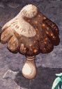
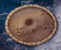

| 概要 | 情報 | アイテム一覧 |
| 敵キャラ一覧 | ステージ一覧 | 夢幻迷宮について |
| 攻略チャート | Zwei!! 攻略へ |
| ステージ一覧へ |
セルペンティナ Lv.21
| 0 | スタート地点 |
| 4' | 4地点の足場が崩れ、4'地点に落下します。 部屋の中には敵がたくさん待ちかまえているので、落ち着いて対処しましょう。 |
| 3' | 上の階層の3地点の足場が崩れ、3'へ落下します。 |
| 4 | 4地点へ移動すると、足場が崩れ下の階の4'へ移動します。 |
| A | A地点の扉を開いた瞬間、部屋に大量の敵が現れます。 |
| B | 部屋Bの宝箱を開くと、敵がたくさん現れます。 |
| 3 | 3地点へ移動すると、足場が崩れ下の階層の3'地点へ移動します。 |
C  |
C地点には女神像があります。 下のプレートを参考に、どこへ置くか考えましょう。 |
| D | D地点へ移動すると、敵に囲まれます。 落ち着いて対処しましょう。 |
E |
E地点のボタンスイッチをONにすると、E'地点の扉が開きます。 |
| F | 部屋Fにある風船を割ると、その都度部屋に罠が現れます。 全ての風船を割ると、先へ進むことができます。 |
| G   |
G地点のキノコを、G'地点にあるぬか床へ置くことで、先へ進めます。 ただし、通路をトゲが移動しているのでぶつからないようにしましょう。 |
| H | 部屋Hに入ると、敵に囲まれます。 注意してください。 |
| ステージ一覧へ |
| 概要 | 情報 | アイテム一覧 |
| 敵キャラ一覧 | ステージ一覧 | 夢幻迷宮について |
| 攻略チャート | Zwei!! 攻略へ |
Zwei!!
| 目次へ戻る | ページの上部へ |